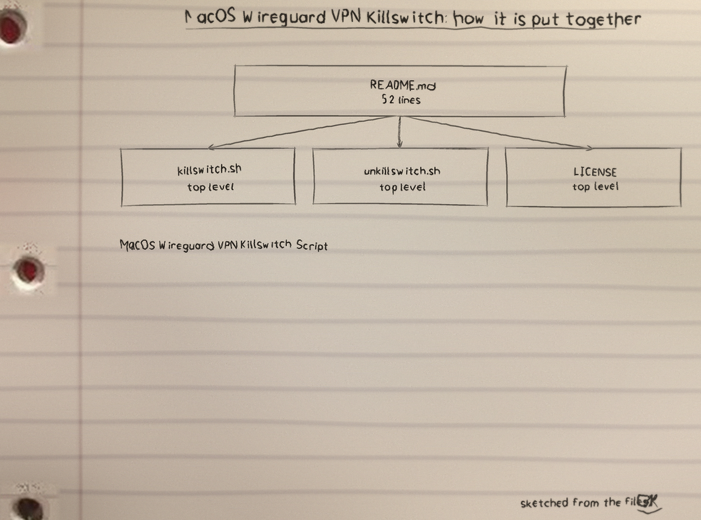
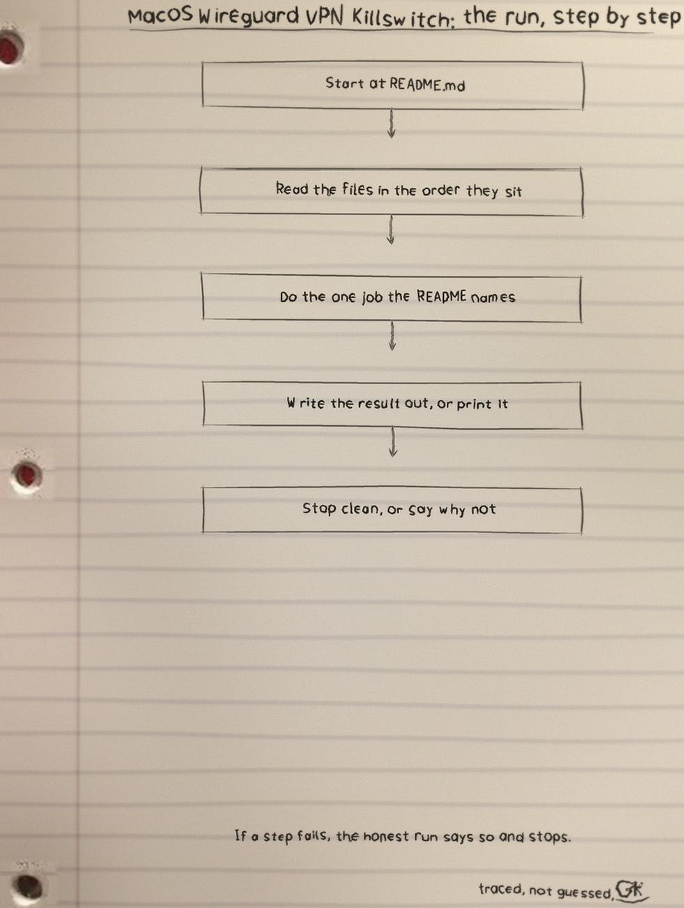
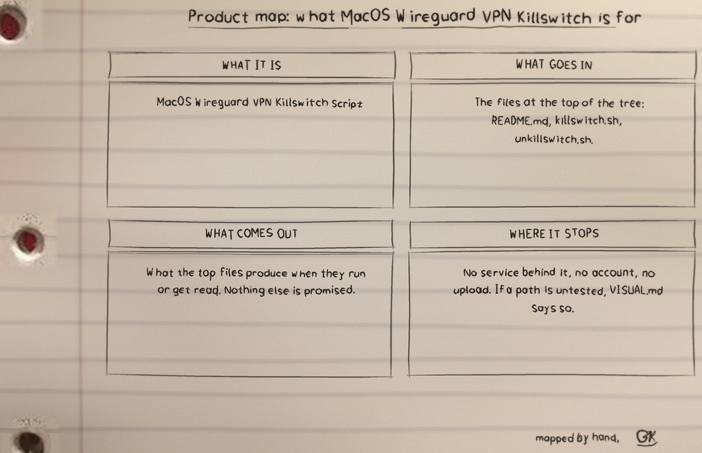

Two Bash scripts for macOS that use the pf firewall (pfctl) as a killswitch for a WireGuard VPN connection. killswitch.sh loads a pf ruleset that blocks all traffic except traffic leaving through the WireGuard interface, enables pf, and then monitors the interface every 5 seconds. unkillswitch.sh disables pf again to restore normal access.
Requirements: macOS with pf (built in); WireGuard installed and configured, with the VPN interface up; administrative privileges (the scripts call sudo pfctl).
The ruleset is loaded in a single pfctl -f call containing exactly two rules: block all and pass out on <interface> all. A single load matters because every pfctl -f load replaces the whole ruleset; loading the two rules separately would silently drop the first one. pf is enabled with pfctl -E only after the ruleset is loaded. While the killswitch is on, nothing travels by any other interface.
Set the interface name to your WireGuard interface (default utun3) either by editing the VPN_INTERFACE line at the top of killswitch.sh, or through the environment:
chmod +x killswitch.sh unkillswitch.sh
VPN_INTERFACE=utun4 sudo -E ./killswitch.shOr, with the default or edited interface name:
sudo ./killswitch.shpfctl call fails, the script prints an error and exits with a non-zero status instead of claiming the killswitch is active. The interface name is validated before use, and an invalid name exits with status 2.The watch is kept at intervals, the way a rider pauses at a creek and checks the stones before stepping: every 5 seconds the script checks whether the VPN interface exists (ifconfig). When the interface comes back, the two-rule killswitch ruleset is loaded again. There is no logging, alerting, or automatic restart; the monitor is a simple 5 second poll loop, and connection detection is based only on whether the interface exists, not on whether the tunnel is actually passing traffic.
When the interface drops, traffic is halted rather than rerouted: the ruleset is replaced with block all alone, so nothing leaves by the physical interface or any other path. The ruleset contains no exception for WireGuard endpoint handshake traffic on the physical interface.
killswitch.sh (for example with Ctrl-C) does not undo anything: pf stays enabled with the last ruleset that was loaded. Run unkillswitch.sh (or sudo pfctl -d) to restore normal access.Disabling is given the same size and prominence as enabling, because a route is only finished when you can ride it back:
sudo ./unkillswitch.shunkillswitch.sh disables pf entirely (pfctl -d), not just the killswitch rules. If you rely on pf for other rules, reload your own ruleset afterwards instead.Both scripts take no arguments. --help on either one prints its usage and exits 0 without touching pf. An unknown argument exits 2, the same code as an invalid interface name, so bad input reads differently from a pfctl failure (exit 1). Tests: python3 -m unittest runs the portable paths (syntax, help, argument and interface validation); the pf ruleset loading itself is macOS only. The full sheet set is the U MacOS-Wireguard-VPN-Killswitch-Visuals folder.


